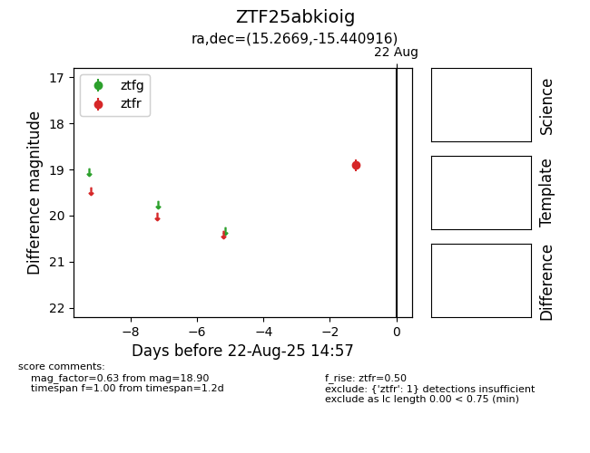

Target ZTF25abkioig at 2025-08-22 15:36, see:
FINK: fink-portal.org/ZTF25abkioig
Lasair: lasair-ztf.lsst.ac.uk/objects/ZTF25abkioig
ALeRCE: alerce.online/object/ZTF25abkioig
alt names
ZTF25abkioig (ztf,alerce)
coordinates:
equatorial (ra, dec) = (15.2669,-15.44092)
galactic (l, b) = (134.2562,-78.10041)
photometry
last ztfr=18.90
1 ztfr detections
